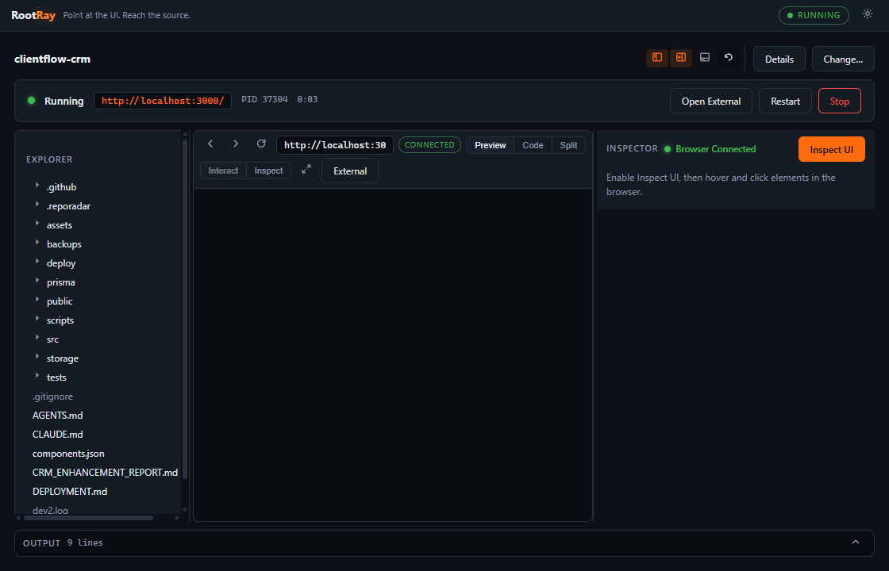

أداة ويندوز محلية بالكامل تلغي الفجوة بين ما تراه في المتصفح وبين السطر الفعلي في ملفات مشروعك. مبنية بلغة Rust ومحرك WebView2 لتمنحك أداءً خارقًا دون استهلاك لموارد جهازك وبدون أي سيرفرات سحابية.

قمنا بقياس أداء RootRay v0.3.0 الفعلي ومقارنته بالحلول التقليدية (محرر منفصل + متصفح + أدوات مبنية على Electron). كل الأرقام مستخرجة من بيئات تشغيل واختبار حقيقية.
Ultra-compact native packaging vs bloated Electron runtimes.
اضغط على أي عنصر في شاشة المعاينة على اليمين وشاهد كيف يقوم RootRay فورًا بربط العنصر بملفه وسطره الدقيق داخل محرر الكود في ثوانٍ معدودة وبدون أي تخمين.
👉 اضغط على أي عنصر بالأسفل لتجربة الفحص الفوري:
لا يعتمد RootRay على أي خدمات سحابية أو جمع لبياناتك. كل شيء يُدار محليًا على جهازك مع فصل كامل للصلاحيات لضمان أمان نظامك ومشاريعك.
نافذة المعاينة عبارة عن سطح WebView2 معزول تمامًا بصلاحيات IPC منعدمة. لا يمكنه قراءة ملفاتك أو تشغيل أوامر النظام، والتصفح مقصور على السيرفر المحلي.
ZERO_IPC_PRIVILEGEيتم تشغيل سيرفرات التطوير داخل Windows Job Object مزود بخاصية الإنهاء الفوري عند الإغلاق، مما يضمن عدم بقاء أي عمليات معلقة تستهلك المنافذ أو الذاكرة.
KILL_ON_JOB_CLOSEيتواصل كود الفحص مع التطبيق عبر منفذ WebSocket محلي عشوائي مع توكن أمان مؤقت لكل جلسة، ويتم رفض أي رسالة غير مطابقة للمواصفات فورًا.
127.0.0.1 DYNAMIC WSتعتمد ميزة التعديل السريع على فحص هاش SHA-256 للتأكد من عدم تعديل الملف خارجيًا، مع حفظ ذري يمنع تلف الملفات أو استبدال التعديلات بالخطأ.
SHA-256 CONCURRENCYيتميز RootRay بالشفافية الكاملة: نعرض ما يمكن إثباته برمجياً دون ادعاء دعم أطر غير مطبقة أو تخمين أماكن عشوائية للمكونات.
| إطار العمل / البيئة | حالة التشغيل | الفحص ومطابقة المصدر |
|---|---|---|
| React + Vite | ✓ Full Runner | مطابقة كاملة لسطر وملف الـ JSX، معلومات المكونات، وتحديث فوري عبر HMR. |
| Next.js (App / Pages Router) | ✓ Supported next dev | مطابقة كاملة لكود الـ JSX مع مسارات Turbopack و Webpack والتحديث السريع. |
| Vite (Vue, Svelte, Vanilla) | ✓ Vite Target | فحص DOM عام ومطابقة دقيقة لملف index.html دون اختراع مواقع وهمية للمكونات. |
| Static Web (HTML / CSS / JS) | ✓ Built-in Server | سيرفر محلي مدمج فائق السرعة مع إعادة تحميل تلقائي عبر SSE ومطابقة للـ HTML. |
| SvelteKit / Astro / Nuxt / Angular | ○ Declared Script | يشغل السكربت الخاص بك بكفاءة؛ لا يوجد adapter مخصص بعد ويتم توضيح ذلك بصدق. |
من فتح المجلد إلى تعديل الكود ورؤية التحديثات لحظياً في نافذة واحدة مريحة.
الإصدار 0.3.0 هو الإصدار المستقر المعتمد. مجاني، مفتوح المصدر (MIT)، ويثبت في ثوانٍ بدون الحاجة لصلاحيات المدير.
تحميل RootRay_0.3.0_x64-setup.exeكل ما تود معرفته عن طريقة عمل RootRay، الخصوصية ومتطلبات التشغيل.